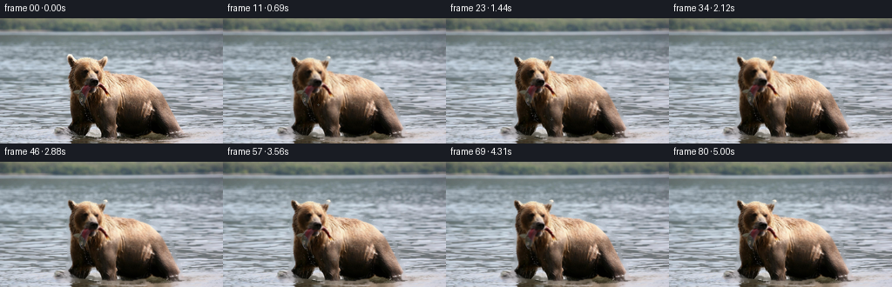
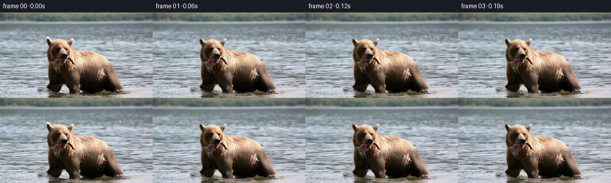

候选 01 · 2026-11-08T20:58:16.746522+00:00 · 点开播放与检查图
inspection.png

transition_check.png

代码变化
--- 上一保存版本
+++ 本次保存版本
@@ -0,0 +1,191 @@
+from pathlib import Path
+import json
+import numpy as np
+import cv2
+from PIL import Image
+import artifact_io
+
+# A deterministic, image-based animation. The still is separated into the animal
+# and a water plate; all motion is sub-pixel so that the photographic detail of the
+# supplied frame is retained.
+ROOT = Path(__file__).resolve().parent
+im = np.asarray(Image.open(ROOT / "first_frame.png").convert("RGB"), dtype=np.uint8)
+with open(ROOT / "task_spec.json", "r", encoding="utf-8") as f:
+ spec = json.load(f)
+H, W = im.shape[:2]
+N = int(spec["frames"])
+yy, xx = np.mgrid[0:H, 0:W].astype(np.float32)
+
+# Hand-seeded GrabCut gives a clean soft silhouette without any learned model.
+gc = np.full((H, W), cv2.GC_BGD, np.uint8)
+outline = np.array([
+ [72,138],[72,118],[76,103],[77,86],[80,66],[77,45],[81,40],[91,48],
+ [98,44],[110,43],[120,48],[126,57],[137,61],[156,62],[174,67],
+ [190,76],[198,89],[203,105],[211,121],[216,133],[211,139],[177,140],
+ [160,134],[145,137],[125,136],[108,133],[92,136]
+], np.int32)
+cv2.fillPoly(gc, [outline], cv2.GC_PR_FGD)
+# Core fur is certain foreground; the mouth/fish and leg edges stay probable.
+core = np.array([[84,60],[96,49],[112,49],[124,61],[152,66],[177,73],
+ [193,91],[200,125],[177,131],[154,126],[139,132],[112,127],
+ [88,127],[80,105]], np.int32)
+cv2.fillPoly(gc, [core], cv2.GC_FGD)
+# Preserve the fish hanging from the mouth as part of the moving subject.
+fish_poly = np.array([[87,83],[97,78],[106,77],[114,80],[122,76],[131,76],
+ [143,86],[145,94],[136,92],[127,86],[119,86],[113,100],
+ [108,109],[101,105],[98,96],[90,94]], np.int32)
+cv2.fillPoly(gc, [fish_poly], cv2.GC_PR_FGD)
+# Water gaps that are enclosed by the broad outline.
+cv2.rectangle(gc, (63,133), (72,143), cv2.GC_BGD, -1)
+cv2.rectangle(gc, (216,133), (255,143), cv2.GC_BGD, -1)
+bgd = np.zeros((1,65), np.float64); fgd = np.zeros((1,65), np.float64)
+cv2.grabCut(cv2.cvtColor(im, cv2.COLOR_RGB2BGR), gc, None, bgd, fgd, 7, cv2.GC_INIT_WITH_MASK)
+hard = np.where((gc == cv2.GC_FGD) | (gc == cv2.GC_PR_FGD), 255, 0).astype(np.uint8)
+# Constrain accidental selections to the intended animal region.
+limit = np.zeros((H,W), np.uint8)
+cv2.fillPoly(limit, [outline], 255)
+hard = cv2.bitwise_and(hard, limit)
+# Seal tiny holes in the coat, then feather only a narrow edge.
+hard = cv2.morphologyEx(hard, cv2.MORPH_CLOSE, np.ones((3,3),np.uint8), iterations=1)
+alpha = cv2.GaussianBlur(hard.astype(np.float32)/255.0, (0,0), 0.72)
+alpha = np.clip(alpha, 0, 1)
+
+# Reconstruct a hidden water plate. Telea fill plus long horizontal smoothing makes
+# its texture agree with the lake rather than looking like a flat patch.
+inpaint_mask = cv2.dilate(hard, np.ones((7,7),np.uint8), iterations=1)
+plate_bgr = cv2.inpaint(cv2.cvtColor(im, cv2.COLOR_RGB2BGR), inpaint_mask, 6, cv2.INPAINT_TELEA)
+plate = cv2.cvtColor(plate_bgr, cv2.COLOR_BGR2RGB).astype(np.float32)
+# Blend some horizontally sampled lake texture into the large filled region.
+blur_h = cv2.GaussianBlur(plate, (21,1), 0)
+inside = cv2.GaussianBlur((inpaint_mask>0).astype(np.float32), (0,0), 3.0)[...,None]
+plate = plate*(1.0-0.18*inside) + blur_h*(0.18*inside)
+orig = im.astype(np.float32)
+
+# Premultiplied cutout prevents dark fringes when remapping.
+premul = orig * alpha[...,None]
+
+# Soft fish influence region for a very small independent flop around the jaws.
+fish_w = np.zeros((H,W), np.float32)
+cv2.fillPoly(fish_w, [fish_poly], 1.0)
+fish_w = cv2.GaussianBlur(fish_w, (0,0), 1.6)
+# Less influence on the muzzle itself; greatest below/right of the mouth.
+fish_w *= np.clip(((yy-72.0)/13.0), 0.15, 1.0)
+
+# Regions used for wet-coat highlights and water-only compositing.
+coat_glint = np.exp(-(((xx-159)/39)**2 + ((yy-86)/26)**2)).astype(np.float32)
+water_only = (1.0 - np.clip(alpha*1.15,0,1))[...,None]
+
+
+def remap_rgb(a, mx, my, border=cv2.BORDER_REFLECT_101):
+ return cv2.remap(a, mx.astype(np.float32), my.astype(np.float32),
+ cv2.INTER_LINEAR, borderMode=border)
+
+
+def add_ripples(frame, k):
+ """Faint expanding elliptical rings made from colors already in the lake."""
+ if k == 0:
+ return frame
+ overlay = frame.copy()
+ strength = np.zeros((H,W), np.float32)
+ # Rings originate at the forelegs and submerged right flank at staggered times.
+ events = [(3,102,133,22),(19,184,132,27),(37,91,134,24),(55,181,133,25)]
+ for start,cx,cy,life in events:
+ age = k-start
+ if 0 <= age <= life:
+ p = age/life
+ rx = int(5 + 28*p)
+ ry = max(1, int(1 + 5*p))
+ fade = (np.sin(np.pi*p)**0.75)*0.35
+ layer = np.zeros((H,W), np.uint8)
+ cv2.ellipse(layer, (cx,cy), (rx,ry), 0, 195, 348, 255, 1, cv2.LINE_AA)
+ # Broken ring looks more like a reflection than a graphic outline.
+ strength += (layer.astype(np.float32)/255.0)*fade
+ if strength.max() > 0:
+ # Pull highlights toward the local cool sky reflection.
+ cool = np.empty_like(overlay)
+ cool[...,0], cool[...,1], cool[...,2] = 171,184,185
+ s = np.clip(strength,0,0.20)[...,None] * water_only
+ overlay = overlay*(1-s) + cool*s
+ return overlay
+
+
+def add_droplets(frame, k):
+ """A few one-pixel water drops fall from the held fish in two short bursts."""
+ out = frame.copy()
+ layer = out.copy()
+ amount = 0.0
+ # (start, x, y, sideways drift)
+ drops = [(8,109,96,-2.0),(12,119,91,2.2),(16,103,101,-1.2),
+ (42,112,96,1.5),(47,125,91,2.8),(52,104,103,-1.5)]
+ for start,x0,y0,drift in drops:
+ a = k-start
+ if 0 <= a <= 13:
+ t = a/13.0
+ x = int(round(x0 + drift*t + 0.7*np.sin(a*0.8)))
+ y = int(round(y0 + 30*t*t + 4*t))
+ if 1 <= x < W-1 and 1 <= y < H-1:
+ col = tuple(int(v) for v in np.clip(orig[min(y,H-1),min(x,W-1)]*0.55 + np.array([145,164,166])*0.45,0,255))
+ cv2.circle(layer, (x,y), 1, col, -1, cv2.LINE_AA)
+ if t > .35:
+ cv2.line(layer, (x,y-2), (x,y), col, 1, cv2.LINE_AA)
+ amount = max(amount, 0.72*(1-t*0.55))
+ if amount:
+ # layer only differs at the tiny droplet marks, so a direct blend stays subtle.
+ diff = np.any(layer != out, axis=2)[...,None]
+ out = np.where(diff, out*(1-amount)+layer*amount, out)
+ return out
+
+frames = []
+for k in range(N):
+ if k == 0:
+ frames.append(im.copy())
+ continue
+ t = float(k)
+ ramp = 1.0 - np.exp(-t/7.0)
+
+ # Lake reflections slide horizontally in several shallow bands. Motion becomes
+ # smaller toward the far shore and is strongest around the bear's legs.
+ near = np.clip((yy-21.0)/123.0, 0, 1)
+ dxw = ramp*(0.42*np.sin(0.115*t + yy*0.165) +
+ 0.20*np.sin(0.071*t + yy*0.39 + xx*0.018))*near
+ dyw = ramp*(0.16*np.sin(0.09*t + xx*0.050 + yy*0.11))*near
+ bg = remap_rgb(plate, xx+dxw, yy+dyw)
+
+ # Gentle breathing and a slight head nod. Destination-to-source mapping keeps
+ # the feet almost fixed while the head and shoulder move by under a pixel.
+ bob = 0.38*np.sin(2*np.pi*t/58.0)*ramp
+ head = np.exp(-(((xx-105)/31)**2 + ((yy-71)/31)**2)).astype(np.float32)
+ torso = np.exp(-(((xx-160)/51)**2 + ((yy-88)/39)**2)).astype(np.float32)
+ dx = (0.52*np.sin(2*np.pi*t/49.0)*head +
+ 0.34*np.sin(2*np.pi*t/67.0)*torso)*ramp
+ dy = (bob*(0.25+0.75*head) +
+ 0.28*np.sin(2*np.pi*t/43.0)*head)*ramp
+
+ # Fish rotates a few degrees around the mouth, like a weakening tail flick.
+ theta = np.deg2rad(2.7*np.sin(2*np.pi*t/25.0) + 0.8*np.sin(2*np.pi*t/11.0))*ramp
+ ax, ay = 112.0, 80.0
+ qx, qy = xx-ax, yy-ay
+ rxs = np.cos(theta)*qx + np.sin(theta)*qy + ax
+ rys = -np.sin(theta)*qx + np.cos(theta)*qy + ay
+ mx = xx-dx + fish_w*(rxs-xx)
+ my = yy-dy + fish_w*(rys-yy)
+
+ mx, my = mx.astype(np.float32), my.astype(np.float32)
+ a2 = cv2.remap(alpha, mx, my, cv2.INTER_LINEAR, borderMode=cv2.BORDER_CONSTANT,
+ borderValue=0)
+ p2 = remap_rgb(premul, mx, my, cv2.BORDER_CONSTANT)
+ # remap_rgb's constant border is harmless since the subject is away from edges.
+ fg = p2 / np.maximum(a2[...,None], 1e-3)
+ frame = bg*(1-a2[...,None]) + fg*a2[...,None]
+
+ # Very weak shifting sheen across wet shoulder fur, tied to breathing.
+ sheen = 1.0 + coat_glint[...,None]*(0.012*np.sin(2*np.pi*t/35.0))*a2[...,None]
+ frame *= sheen
+ frame = add_ripples(frame, k)
+ frame = add_droplets(frame, k)
+ frames.append(np.clip(np.rint(frame),0,255).astype(np.uint8))
+
+frames = np.stack(frames, axis=0)
+assert frames.shape == (N,H,W,3) and frames.dtype == np.uint8
+assert np.array_equal(frames[0], im)
+artifact_io.save(frames, ROOT)
命令 7 · 2026-11-08T20:57:54.162838+00:00/bin/bash -lc "cat > generate.py <<'PY'
from pathlib import Path
import json
import numpy as np
import cv2
from PIL import Image
import artifact_io
# A deterministic, image-based animation. The still is separated into the animal
# and a water plate; all motion is sub-pixel so that the photographic detail of the
# supplied frame is retained.
ROOT = Path(__file__).resolve().parent
im = np.asarray(Image.open(ROOT / \"first_frame.png\").convert(\"RGB\"), dtype=np.uint8)
with open(ROOT / \"task_spec.json\", \"r\", encoding=\"utf-8\") as f:
spec = json.load(f)
H, W = im.shape[:2]
N = int(spec[\"frames\"])
yy, xx = np.mgrid[0:H, 0:W].astype(np.float32)
# Hand-seeded GrabCut gives a clean soft silhouette without any learned model.
gc = np.full((H, W), cv2.GC_BGD, np.uint8)
outline = np.array([
[72,138],[72,118],[76,103],[77,86],[80,66],[77,45],[81,40],[91,48],
[98,44],[110,43],[120,48],[126,57],[137,61],[156,62],[174,67],
[190,76],[198,89],[203,105],[211,121],[216,133],[211,139],[177,140],
[160,134],[145,137],[125,136],[108,133],[92,136]
], np.int32)
cv2.fillPoly(gc, [outline], cv2.GC_PR_FGD)
# Core fur is certain foreground; the mouth/fish and leg edges stay probable.
core = np.array([[84,60],[96,49],[112,49],[124,61],[152,66],[177,73],
[193,91],[200,125],[177,131],[154,126],[139,132],[112,127],
[88,127],[80,105]], np.int32)
cv2.fillPoly(gc, [core], cv2.GC_FGD)
# Preserve the fish hanging from the mouth as part of the moving subject.
fish_poly = np.array([[87,83],[97,78],[106,77],[114,80],[122,76],[131,76],
[143,86],[145,94],[136,92],[127,86],[119,86],[113,100],
[108,109],[101,105],[98,96],[90,94]], np.int32)
cv2.fillPoly(gc, [fish_poly], cv2.GC_PR_FGD)
# Water gaps that are enclosed by the broad outline.
cv2.rectangle(gc, (63,133), (72,143), cv2.GC_BGD, -1)
cv2.rectangle(gc, (216,133), (255,143), cv2.GC_BGD, -1)
bgd = np.zeros((1,65), np.float64); fgd = np.zeros((1,65), np.float64)
cv2.grabCut(cv2.cvtColor(im, cv2.COLOR_RGB2BGR), gc, None, bgd, fgd, 7, cv2.GC_INIT_WITH_MASK)
hard = np.where((gc == cv2.GC_FGD) | (gc == cv2.GC_PR_FGD), 255, 0).astype(np.uint8)
# Constrain accidental selections to the intended animal region.
limit = np.zeros((H,W), np.uint8)
cv2.fillPoly(limit, [outline], 255)
hard = cv2.bitwise_and(hard, limit)
# Seal tiny holes in the coat, then feather only a narrow edge.
hard = cv2.morphologyEx(hard, cv2.MORPH_CLOSE, np.ones((3,3),np.uint8), iterations=1)
alpha = cv2.GaussianBlur(hard.astype(np.float32)/255.0, (0,0), 0.72)
alpha = np.clip(alpha, 0, 1)
# Reconstruct a hidden water plate. Telea fill plus long horizontal smoothing makes
# its texture agree with the lake rather than looking like a flat patch.
inpaint_mask = cv2.dilate(hard, np.ones((7,7),np.uint8), iterations=1)
plate_bgr = cv2.inpaint(cv2.cvtColor(im, cv2.COLOR_RGB2BGR), inpaint_mask, 6, cv2.INPAINT_TELEA)
plate = cv2.cvtColor(plate_bgr, cv2.COLOR_BGR2RGB).astype(np.float32)
# Blend some horizontally sampled lake texture into the large filled region.
blur_h = cv2.GaussianBlur(plate, (21,1), 0)
inside = cv2.GaussianBlur((inpaint_mask>0).astype(np.float32), (0,0), 3.0)[...,None]
plate = plate*(1.0-0.18*inside) + blur_h*(0.18*inside)
orig = im.astype(np.float32)
# Premultiplied cutout prevents dark fringes when remapping.
premul = orig * alpha[...,None]
# Soft fish influence region for a very small independent flop around the jaws.
fish_w = np.zeros((H,W), np.float32)
cv2.fillPoly(fish_w, [fish_poly], 1.0)
fish_w = cv2.GaussianBlur(fish_w, (0,0), 1.6)
# Less influence on the muzzle itself; greatest below/right of the mouth.
fish_w *= np.clip(((yy-72.0)/13.0), 0.15, 1.0)
# Regions used for wet-coat highlights and water-only compositing.
coat_glint = np.exp(-(((xx-159)/39)**2 + ((yy-86)/26)**2)).astype(np.float32)
water_only = (1.0 - np.clip(alpha*1.15,0,1))[...,None]
def remap_rgb(a, mx, my, border=cv2.BORDER_REFLECT_101):
return cv2.remap(a, mx.astype(np.float32), my.astype(np.float32),
cv2.INTER_LINEAR, borderMode=border)
def add_ripples(frame, k):
\"\"\"Faint expanding elliptical rings made from colors already in the lake.\"\"\"
if k == 0:
return frame
overlay = frame.copy()
strength = np.zeros((H,W), np.float32)
# Rings originate at the forelegs and submerged right flank at staggered times.
events = [(3,102,133,22),(19,184,132,27),(37,91,134,24),(55,181,133,25)]
for start,cx,cy,life in events:
age = k-start
if 0 <= age <= life:
p = age/life
rx = int(5 + 28*p)
ry = max(1, int(1 + 5*p))
fade = (np.sin(np.pi*p)**0.75)*0.35
layer = np.zeros((H,W), np.uint8)
cv2.ellipse(layer, (cx,cy), (rx,ry), 0, 195, 348, 255, 1, cv2.LINE_AA)
# Broken ring looks more like a reflection than a graphic outline.
strength += (layer.astype(np.float32)/255.0)*fade
if strength.max() > 0:
# Pull highlights toward the local cool sky reflection.
cool = np.empty_like(overlay)
cool[...,0], cool[...,1], cool[...,2] = 171,184,185
s = np.clip(strength,0,0.20)[...,None] * water_only
overlay = overlay*(1-s) + cool*s
return overlay
def add_droplets(frame, k):
\"\"\"A few one-pixel water drops fall from the held fish in two short bursts.\"\"\"
out = frame.copy()
layer = out.copy()
amount = 0.0
# (start, x, y, sideways drift)
drops = [(8,109,96,-2.0),(12,119,91,2.2),(16,103,101,-1.2),
(42,112,96,1.5),(47,125,91,2.8),(52,104,103,-1.5)]
for start,x0,y0,drift in drops:
a = k-start
if 0 <= a <= 13:
t = a/13.0
x = int(round(x0 + drift*t + 0.7*np.sin(a*0.8)))
y = int(round(y0 + 30*t*t + 4*t))
if 1 <= x < W-1 and 1 <= y < H-1:
col = tuple(int(v) for v in np.clip(orig[min(y,H-1),min(x,W-1)]*0.55 + np.array([145,164,166])*0.45,0,255))
cv2.circle(layer, (x,y), 1, col, -1, cv2.LINE_AA)
if t > .35:
cv2.line(layer, (x,y-2), (x,y), col, 1, cv2.LINE_AA)
amount = max(amount, 0.72*(1-t*0.55))
if amount:
# layer only differs at the tiny droplet marks, so a direct blend stays subtle.
diff = np.any(layer "'!= out, axis=2)[...,None]
out = np.where(diff, out*(1-amount)+layer*amount, out)
return out
frames = []
for k in range(N):
if k == 0:
frames.append(im.copy())
continue
t = float(k)
ramp = 1.0 - np.exp(-t/7.0)
# Lake reflections slide horizontally in several shallow bands. Motion becomes
# smaller toward the far shore and is strongest around the bear'"'s legs.
near = np.clip((yy-21.0)/123.0, 0, 1)
dxw = ramp*(0.42*np.sin(0.115*t + yy*0.165) +
0.20*np.sin(0.071*t + yy*0.39 + xx*0.018))*near
dyw = ramp*(0.16*np.sin(0.09*t + xx*0.050 + yy*0.11))*near
bg = remap_rgb(plate, xx+dxw, yy+dyw)
# Gentle breathing and a slight head nod. Destination-to-source mapping keeps
# the feet almost fixed while the head and shoulder move by under a pixel.
bob = 0.38*np.sin(2*np.pi*t/58.0)*ramp
head = np.exp(-(((xx-105)/31)**2 + ((yy-71)/31)**2)).astype(np.float32)
torso = np.exp(-(((xx-160)/51)**2 + ((yy-88)/39)**2)).astype(np.float32)
dx = (0.52*np.sin(2*np.pi*t/49.0)*head +
0.34*np.sin(2*np.pi*t/67.0)*torso)*ramp
dy = (bob*(0.25+0.75*head) +
0.28*np.sin(2*np.pi*t/43.0)*head)*ramp
# Fish rotates a few degrees around the mouth, like a weakening tail flick.
theta = np.deg2rad(2.7*np.sin(2*np.pi*t/25.0) + 0.8*np.sin(2*np.pi*t/11.0))*ramp
ax, ay = 112.0, 80.0
qx, qy = xx-ax, yy-ay
rxs = np.cos(theta)*qx + np.sin(theta)*qy + ax
rys = -np.sin(theta)*qx + np.cos(theta)*qy + ay
mx = xx-dx + fish_w*(rxs-xx)
my = yy-dy + fish_w*(rys-yy)
a2 = cv2.remap(alpha, mx, my, cv2.INTER_LINEAR, borderMode=cv2.BORDER_CONSTANT,
borderValue=0)
p2 = remap_rgb(premul, mx, my, cv2.BORDER_CONSTANT)
# remap_rgb's constant border is harmless since the subject is away from edges.
fg = p2 / np.maximum(a2[...,None], 1e-3)
frame = bg*(1-a2[...,None]) + fg*a2[...,None]
# Very weak shifting sheen across wet shoulder fur, tied to breathing.
sheen = 1.0 + coat_glint[...,None]*(0.012*np.sin(2*np.pi*t/35.0))*a2[...,None]
frame *= sheen
frame = add_ripples(frame, k)
frame = add_droplets(frame, k)
frames.append(np.clip(np.rint(frame),0,255).astype(np.uint8))
frames = np.stack(frames, axis=0)
assert frames.shape == (N,H,W,3) and frames.dtype == np.uint8
assert np.array_equal(frames[0], im)
artifact_io.save(frames, ROOT)
PY
python generate.py"exit 1